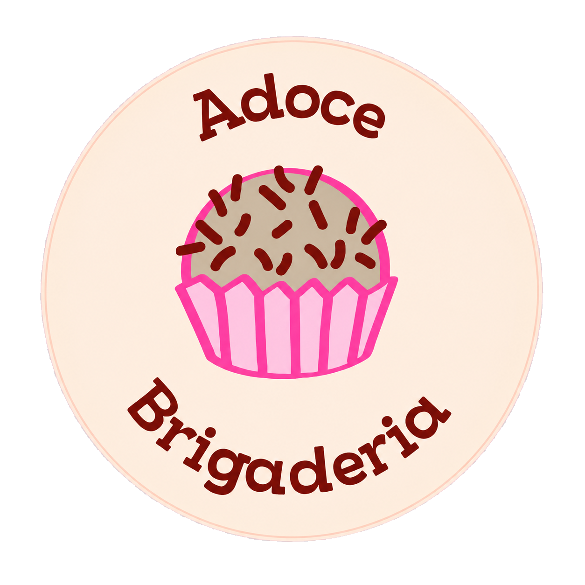
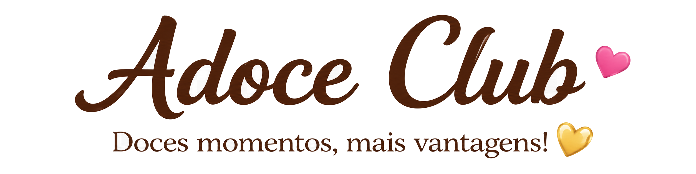

Referências Visuais
Conceitos aprovados, cartão físico, logo original e análise comparativa estão em referencias/ e nesta documentação.



Portal offline da documentação
Regras, fluxos, arquitetura e operação da experiência digital de fidelidade da Adoce Brigaderia, organizada para consulta offline.
Conceitos aprovados, cartão físico, logo original e análise comparativa estão em referencias/ e nesta documentação.
PWA funcional com estado demonstrativo local, caixa, vendas, QR, fidelidade, família, indicação e relatórios.
Execute npm run dev. Para aceite técnico, use lint, build e Playwright conforme o guia local.
Tente outra palavra ou limpe a busca.
O Adoce Club substitui o cartão físico da Adoce Brigaderia por um PWA. Ele conecta clientes presenciais e delivery, vendedores e sócios em uma experiência de fidelidade visual.
O cliente entra no app, consulta o cartão, resgata tokens, acompanha prêmios, cria ou entra em família e compartilha seu código de indicação. Delivery usa o mesmo fluxo por link recebido no WhatsApp.
O vendedor confere o caixa, informa quantidade, pagamento e modalidade. Presencial gera QR Code; delivery gera token/link. Vendas recentes permitem reabrir o QR ou compartilhar novamente.
O sócio abre o caixa, informa fundo e estoque, acompanha vendas, faturamento, custo e lucro estimado, e altera configurações comerciais.
Cada pessoa mantém perfil próprio, mas uma associação em family_members direciona eventos ao cartão da família. Convites usam código único. Todos recebem comunicação individual.
O indicado registra o código no cadastro. O bônus é liberado apenas no primeiro evento de compra e a restrição única evita duplicidade.
A sessão diária registra operador, horário, fundo fixo e estoque inicial. Relatórios comparam vendas, pagamentos, estoque estimado e fechamento informado para destacar divergências.
O modelo PostgreSQL está em supabase/schema.sql, dados demonstrativos em seed.sql e políticas RLS em policies.sql. Eventos de fidelidade e auditoria são imutáveis no uso normal.
React + TypeScript + Vite compõem o PWA. React Router trata rotas e Zustand persiste o protótipo no localStorage do aparelho para demonstração. Supabase será a camada de autenticação, PostgreSQL, RLS e funções transacionais.
O localStorage não sincroniza aparelhos, não oferece autenticação e não substitui um banco. Ele existe apenas para a primeira demonstração não perder caixa, vendas e carimbos ao recarregar a página.
1. Use Node.js 24 ou superior. 2. Execute npm install. 3. Execute npm run asset. 4. Execute npm run dev. 5. Para produção, execute npm run build. 6. Para validar o código, execute npm run lint e npm test.
As variáveis futuras estão documentadas em .env.example.
O portal abre diretamente em Documentacao/Portal/index.html e também é copiado para public/documentacao/index.html durante npm run docs.
Playwright cobre login, bloqueio sem caixa, abertura de caixa, venda presencial, venda delivery, QR, reabertura de venda, resgate de token, persistência local, família, indicação, relatório, configurações e portal offline. Execute npm test.
O roteiro exploratório está em tests/roteiro-manual.md. Integração real com Supabase, câmera e WhatsApp ainda depende da próxima etapa técnica.
PWA, caixa, vendas, QR/token, fidelidade, família, indicação, relatórios e documentação.
Fatia premiada, aniversário, sabores, notificações e campanhas.
Torta ideal, votação, VIP, vale-presente, compra em grupo, impressão e painel desktop avançado.
Nunca versionar .env, chaves ou dados reais. RLS limita vendedor às próprias vendas e cliente aos próprios recursos. Tokens devem ser aleatórios, expiráveis e resgatados por função transacional.
O repositório deve permanecer privado. Commits precisam ser claros e nenhum segredo deve entrar no histórico. Antes de publicar, conferir git status e visibilidade com GitHub CLI.
O projeto local está versionado. A publicação e a confirmação de privacidade dependem de autenticação válida do GitHub CLI no computador.
1. Admin abre o caixa e informa estoque. 2. Vendedor registra cada venda. 3. Cliente recebe carimbos por QR ou link. 4. Vendedor recupera vendas pendentes em Vendas Recentes. 5. Admin acompanha estoque e valores no relatório. 6. Ao fim do dia, confere divergências antes do fechamento.
No protótipo, os dados ficam apenas no navegador utilizado. Não limpar os dados do site durante uma demonstração, pois isso reinicia o estado local.
O MVP conecta cliente, gestor, vendas, caixa, gastos, reservas, fidelidade, prêmios, selos, indicações e configurações em um estado local persistente.
O JPEG original possui pixels pretos fora do círculo bege. O app preserva o conteúdo original e aplica uma máscara circular interna sobre uma moldura creme. Nenhuma tela exibe o contorno preto.
Point e Link são simulações preparatórias. Operador e terminal vêm do usuário logado. Nenhum Access Token existe no front-end. A integração real deverá usar backend, Orders API e webhooks.
Esta pasta reúne visão de produto, regras, fluxos, arquitetura, segurança e operação. Execute npm run docs para regenerar o portal offline.
referencias/imagens/conceito-cliente.jpeg: composição da home do cliente, cartão, sabores, atalhos e navegação.referencias/imagens/conceito-vendedor.jpeg: composição do painel do vendedor, métricas, nova venda e vendas recentes.referencias/imagens/conceito-fatia-premiada.jpeg: linguagem de celebração, sucesso, brilho e recompensa.referencias/imagens/conceito-familia-indicacao.jpeg: cartão familiar, avatares, indicação e aniversário.referencias/imagens/cartao-fidelidade-frente.jpeg: textura rosa, ondas douradas, brilho e promessa de recompensa.referencias/imagens/cartao-fidelidade-verso.jpeg: grade de 14 espaços e linguagem das regras.referencias/imagens/logo-adoce-original.jpeg: marca original; único local onde cupcake é permitido.Documentacao/prints/01-cliente.pngDocumentacao/prints/02-venda-delivery.pngDocumentacao/prints/03-venda-qr.pngDocumentacao/prints/04-relatorios.pngDocumentacao/prints/05-portal-busca.pngO visual anterior validava os fluxos, mas parecia um protótipo simples. A repetição grosseira da logo no fundo substituía a textura delicada do conceito. O header era alto, fragmentado e sem a composição central da marca. Os cards tinham pouca profundidade, quase nenhum ornamento, brilho ou acabamento dourado. A hierarquia tipográfica e os espaçamentos eram muito maiores e mais pesados que no conceito, reduzindo a quantidade de conteúdo visível na tela.
O vendedor não recebia a composição única da referência: métricas, nova venda e vendas recentes estavam separados em telas. A tela de QR parecia técnica. Família e indicação não formavam um painel contínuo. O portal tinha estrutura funcional, mas parecia HTML simples, sem capa, navegação mobile adequada ou identidade editorial oficial.
1. Criar um sistema visual local com textura CSS, ondas, brilhos, corações e ornamentos dourados. 2. Refazer AppShell, header e navegação para reproduzir as proporções dos conceitos. 3. Refazer o cartão de fidelidade, slots e carimbo de fatia em escala compacta. 4. Unificar o painel vendedor com caixa, métricas, venda rápida e vendas recentes. 5. Refazer QR, relatórios, família e indicação como painéis premium contínuos. 6. Reconstruir o gerador do portal com HTML semântico, capa, cards de acesso rápido, busca normalizada, menu recolhível e botão de topo. 7. Gerar prints novos em viewport mobile e comparar novamente com as referências.
AppShell, BrandHeader, DecorativeBackground, VisualOrnamentsLoyaltyCard, StampSlot, ChocolateCakeSliceStampPrimaryButton, SoftCard, SectionTitle, BottomNavMetricCard, SellerSalePanel, RecentSalesCardQRCard, FamilyReferralPanel, ReportCardO app foi reconstruído com composição compacta, cabeçalho centralizado, textura rosa suave, ondas douradas, cartões creme com borda dupla, tipografia caligráfica nos títulos e navegação inferior integrada. O painel do vendedor agora reúne caixa, métricas, venda rápida e histórico na mesma experiência. QR, relatórios, família e indicação receberam o mesmo acabamento visual.
Os prints finais estão em Documentacao/prints/:
01-cliente-home.png02-vendedor-home.png03-venda-qr.png04-relatorios.png05-familia-indicacao.png06-portal-documentacao.png07-portal-documentacao-mobile.pngDiferenças residuais justificadas: os mockups usam uma moldura fotográfica de aparelho e fontes/ilustrações geradas que não fazem parte dos arquivos originais do projeto. A implementação mantém HTML responsivo e fontes locais do sistema para funcionar offline. A mini fatia de torta substitui deliberadamente o carimbo circular do conceito, conforme solicitado, e o cupcake permanece restrito à logo original.
Segoe Script/Brush Script MT em títulos; Georgia/Times New Roman em textos; Segoe UI/system-ui em controles. Tudo funciona offline, sem CDN.